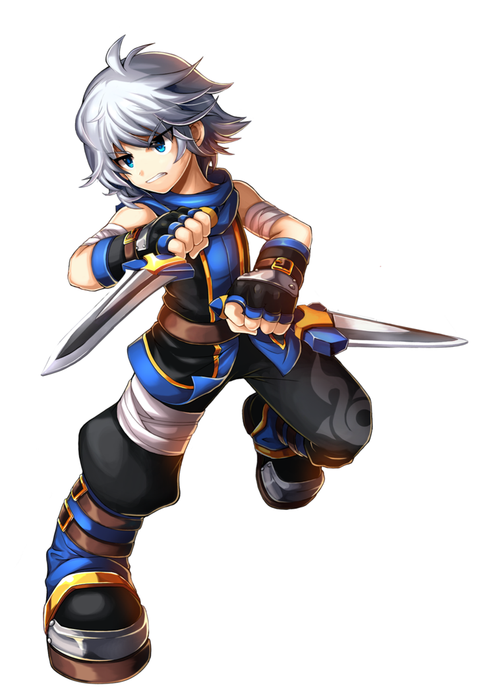
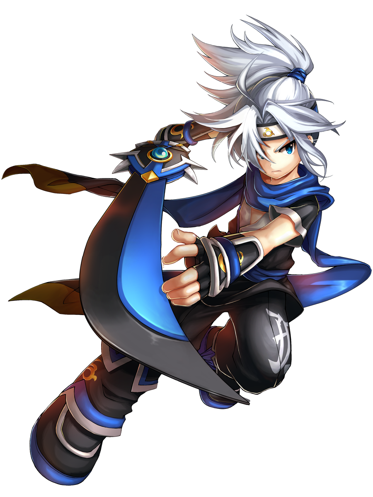
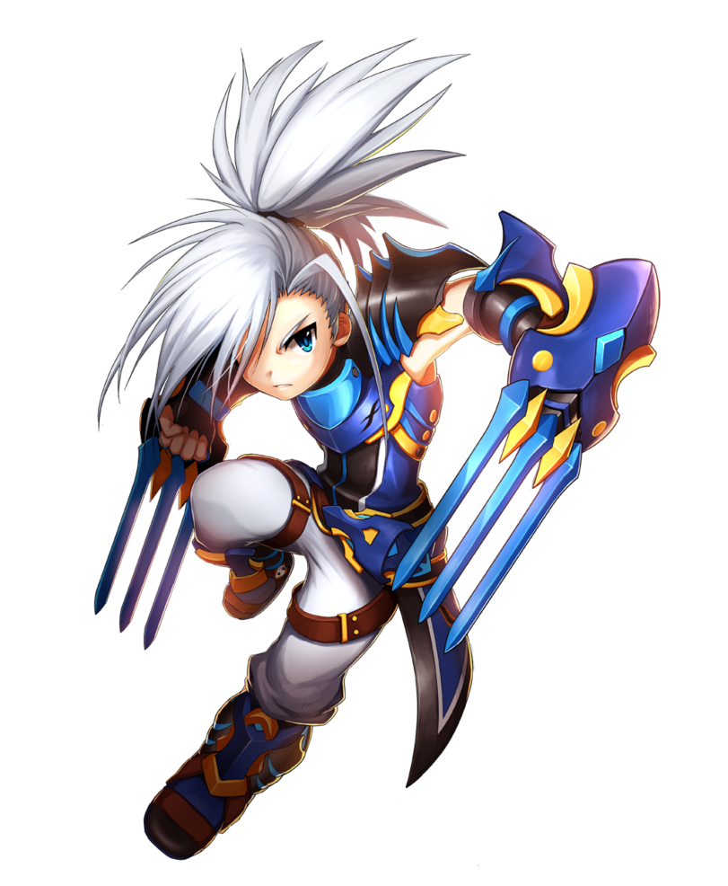
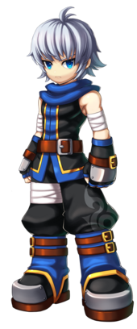
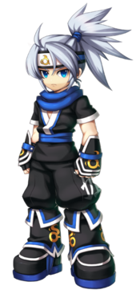
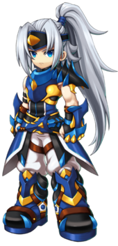
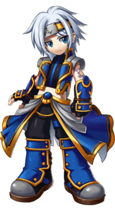
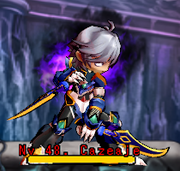

Informações Principais do Personagem
Nome: Lass Isolet
Idade: desconhecida
Origem: Cidade da Cruz de Prata
Hobbies: Desconhecido
Gostos: Privacidade, sombras, velocidade
Não Gosta: Cazeaje, circos, barulho
Fraquezas: Cães


Pouco se sabe sobre o passado de Lass. Por muitos anos, o corpo do garoto foi usado por
Cazeaje, que o possuiu para se aproveitar de suas habilidades especiais. Quando ele finalmente
foi libertado do controle da Rainha das Trevas pela Grand Chase, decidiu se unir ao grupo para
se redimir pelas ações que foi forçado a cometer em nome de Cazeaje.
Isso fez com que o garoto se tornasse mais introspectivo e com sede de vingança, buscando sempre
punir as forças das trevas que usem pessoas inocentes para seus propósitos malignos. Não se sabe
ao certo o que Lass recorda de sua vida anterior, mas o garoto agora sabe que sempre carregará
as trevas em seu interior, lutando constantemente para nunca mais ser dominado por elas.

Classes

Ninja
Arma: Adagas

Mercenário
Arma: Alfange

Vingador
Arma: Garras

Retalhador
Arma: Katana
Chefe
Lass é o primeiro chefe na fase onde você luta contra o semichefe no Castelo Cazeaje. O Lass do
Castelo Cazeaje tem ataques bem similares aos ataques do Ninja. A fase pode ser vista como uma
luta de PvP; entretanto, o Ataque Final não pode matar e ele passa pelo chão sem explosões, ele
não possui o Ataque Fatal nem a Árvore de Talentos, e os jogadores não podem dar agarrões.
